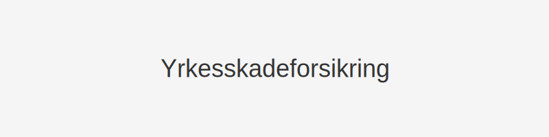

Yrkesskadeforsikring er en lovpålagt forsikring som arbeidsgiver må tegne for å sikre ansatte ved yrkesskader og yrkessykdommer. Denne artikkelen gir en grundig gjennomgang av hva yrkesskadeforsikring er, hvilke dekningsområder som gjelder, hvordan premien beregnes og hvordan kostnaden regnskapsføres i norsk regnskap.

Hva er Yrkesskadeforsikring?
Yrkesskadeforsikring dekker skader eller sykdommer som oppstår som direkte følge av arbeid eller arbeidsforhold. Forsikringen beskytter både arbeidstaker og arbeidsgiver ved økonomiske krav knyttet til yrkesskade.
Dekningen omfatter blant annet:
- Medisinske utgifter – refusjon av nødvendige behandlingskostnader.
- Erstatning for inntektstap – kompensasjon for tapt arbeidsinntekt.
- Rehabilitering og hjelpemidler – dekning av tiltak for tilbakeføring til arbeid.
- Midlertidig og varig mén – erstatning ved nedsatt arbeidsevne.
Lovkrav og Arbeidsgiveransvar
I Norge er arbeidsgiver pliktig til å tegne yrkesskadeforsikring for alle ansatte i henhold til HMS og folketrygdloven. Unnlatelse av å ha gyldig forsikring kan medføre:
- Tvungent forsikringskjøp gjennom offentlige instanser.
- Straffegebyr eller andre sanksjoner.
- Erstatningsansvar for arbeidsgiver ved skader på ansatte.
Se også artikkelen om Arbeidsgiver for mer om arbeidsgivers generelle forpliktelser.
Dekningstyper og Grensebeløp
| Dekning | Omfang | Grensebeløp (NOK) |
|---|---|---|
| Medisinske utgifter | Behandling, operasjon, medisiner | Ubegrenset |
| Inntektstap | Inntil 100 % av tapt inntekt | Inntil 6 G |
| Rehabilitering og hjelpemidler | Fysioterapi, tiltak, proteser | Inntil 1 G |
| Erstatning ved varig mén | Engangsutbetaling for méngrader | Opptil 25 G |
Tabellen over viser typiske dekningsmodellene. Grensebeløpene er angitt i G (folketrygdens grunnbeløp).
Premieberegning og Kostnad
Premien for yrkesskadeforsikring beregnes ut fra virksomhetens risikoprofil, bransje, ansattes lønnsgrunnlag og antall ansatte. Nøkkelfaktorer som påvirker premie:
- Bransje/risikoklasse – høy risiko gir høyere premie.
- Årlig lønnsgrunnlag – samlet lønn for alle ansatte.
- Antall ansatte – større bedrifter får ofte bedre pris per ansatt.
- Tidligere erstatningshistorikk – kravhistorikk kan øke premien.
For mer om hvordan forsikringspremie regnskapsføres, se Forsikringspremie.
Regnskapsføring av Yrkesskadeforsikring
Når premie betales, bokføres det som en forskuddsbetalt kostnad og periodiseres over forsikringsperioden:
- Debet Forskuddsbetalte kostnader (konto 1830)
- Kredit Bankinnskudd (konto 1920)
Ved periodisering må kostnaden matches i den perioden dekningen gjelder:
- Debet Forsikringskostnad (konto 6300)
- Kredit Forskuddsbetalte kostnader (konto 1830)
Skattemessige forhold
Premien for yrkesskadeforsikring er fradragsberettiget som en driftskostnad. Arbeidsgiver kan kreve fradrag for premiekostnaden i skattemeldingen, noe som reduserer skattepliktig resultat.
Relaterte artikler
Denne artikkelen gir en omfattende oversikt over yrkesskadeforsikring i norsk regnskap. For spesifikke spørsmål eller komplekse saker, kontakt en regnskapsfører eller forsikringsrådgiver.